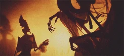
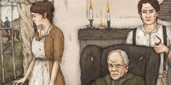
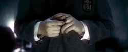
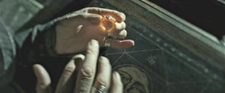

"They were neither ghost nor truly flesh, he could see that. They resembled most closely the Riddle that had escaped from the diary so long ago, and he had been memory made nearly solid. Less substantial than living bodies, but much more than ghosts, they moved toward him, and on each face, there was the same loving smile." — Description of the shades brought back by the Stone
The Resurrection Stone was one of the fabled Deathly Hallows. In The Tale of the Three Brothers, it was the second Hallow created, supposedly by Death himself. It was bestowed upon Cadmus Peverell after he requested, as his bounty, something with the power to recall loved ones from Death. According to legend, whoever reunited it with the other two Hallows (the Elder Wand and the Cloak of Invisibility) would become the Master of Death.
It was one of the two Hallows known to have been successfully passed down from generation to generation since Cadmus's time. In 1943 it passed to the possession of Tom Riddle who unknowingly stole it while it was still concealed in Marvolo Gaunt's Ring, which he turned into a Horcrux. The ring was destroyed in 1996 by Albus Dumbledore, but the stone was placed in Harry Potter's first Golden Snitch until it passed into the possession of Harry Potter who used it to great success in the Second Wizarding War.
According to legend, whoever reunited it with the other two Hallows, the Elder Wand and the Cloak of Invisibility, would become the Master of Death. Though this was generally assumed to mean that the wielder would have some form of immortality, this was not the case. Harry Potter possessed all three Hallows yet never became the Master of Death as in conquering death. It meant that to be "Master of Death" was to accept one's mortality.
It was said to be the only object that would bring back the spirits of the holder's deceased loved ones, activating when turned three times in the user's hand. These shades were said to dislike being drawn from their rightful afterlife.
Grindelwald mistakenly believed that the Stone could be used to create an army of Inferi.
Harry Potter successfully used it to summon images of his deceased loved ones, including James Potter and Lily Evans. Their exact nature was unclear, and they made no complaint about being summoned. These shades are more physically solid than a ghost but less so than a living body. Harry described them as almost transparent. They remained visible only as long as the stone was held, and produced a Patronus-like effect that shielded against Dementors. The shades told Harry that he, the holder of the Stone, was the only one who could see them.
Mythic origins of the Stone
 According to the legend recounted by Beedle, the Bard in The Tale of the Three Brothers, Cadmus Peverell, and his two brothers were travelling along a long, winding road at twilight when they came upon a river too deep and rapid to cross. When the brothers conjured a bridge to cross the river, Death appeared before them. Angry that they had found a way to cross the river without dying, Death pretended to offer each brother a gift, hoping that the gift would lead to their downfall. As Cadmus was arrogant, he wanted to further humiliate Death, which led to him asking for the Resurrection Stone. He wished for an item that would enable him to bring back the dead, so Death took a stone from the riverbank and used his abilities to transform it into the Resurrection Stone.
Cadmus's possession
"And so Death took the second brother for his own." — The Tale of the Three Brothers
 Albus Dumbledore thought it was unlikely that the Resurrection Stone was made by Death, it may have been created by the second oldest of the three Peverell brothers, Cadmus. Regardless of how the Stone was truly created, Cadmus used it to attempt to bring back a girl he had loved and was prepared to marry before her untimely death. While he was able to bring back a shade of her, he felt as though a "veil" separated them, and he could tell that she was suffering greatly from being forced back among the world of the living. Realising the limitations of the Stone, Cadmus killed himself out of grief so that he could truly be with her.
Albus Dumbledore thought it was unlikely that the Resurrection Stone was made by Death, it may have been created by the second oldest of the three Peverell brothers, Cadmus. Regardless of how the Stone was truly created, Cadmus used it to attempt to bring back a girl he had loved and was prepared to marry before her untimely death. While he was able to bring back a shade of her, he felt as though a "veil" separated them, and he could tell that she was suffering greatly from being forced back among the world of the living. Realising the limitations of the Stone, Cadmus killed himself out of grief so that he could truly be with her.
However, given that some aspects of the tale were just fictionalised by Beedle, it is possible that this account of Cadmus's death was one of it. Furthermore, there are no means for Beedle to know what had really happened, much less Cadmus's intentions.
Gaunt family's possession
"See this? See this? Know what it is? Know where it came from? Centuries it's been in our family, that's how far back we go, and pure-blood all the way! Know how much I've been offered for this, with the Peverell coat of arms engraved on the stone?" — Marvolo Gaunt rants about his blood purity to Bob Ogden

Sometime after Cadmus's death (or perhaps even by Cadmus himself), the Resurrection Stone was fitted into a ring. This ring was passed down as a family heirloom for the Peverell family, and eventually the Gaunt family, as knowledge of what the Stone was, and even what the symbol on it meant, became lost. Eventually, it made its way into the possession of Marvolo Gaunt, who would use the ring to flaunt the purity of his blood, such as he did to Bob Ogden when the latter came to call about Morfin Gaunt's attack on Tom Riddle Snr.
After Marvolo died shortly after serving a six-month sentence in Azkaban for attacking Bob Ogden, the ring was inherited by his son Morfin. He would wear the ring until Tom Riddle came to the Gaunt shack seeking information about his wizarding family. Sensing that the ring was a family heirloom, Riddle would pocket it after killing his Muggle relatives and framing Morfin for the murder.
Tom Riddle's possession
For a time, Riddle wore the ring containing the Stone. However, once he had ascertained from Professor Horace Slughorn that creating multiple Horcruxes was at least hypothetically possible, he used the murder of his father to turn the ring, and thus the Stone, into his second Horcrux.

After this time, he hid the ring back in the Gaunt shack, putting numerous magical protections on the site to keep the Horcrux safe.[4] Due to Riddle turning the Stone into a Horcrux, he either did not know of its status as one of the three Hallows and power or simply did not care. He would not care because he had no loved ones to resurrect, as he did not feel love and feared the dead. It is more likely that he did not know about the stone.
Albus Dumbledore's possession
"I was such a fool, Harry. After all those years I had learned nothing. I was unworthy to unite the Deathly Hallows, I had proved it time and time again, and here was final proof." — Albus Dumbledore discusses the Stone with Harry Potter in Limbo

After spending many months looking into Voldemort's past, Albus Dumbledore was able to track down the location of the ring and retrieve it. Though he had long since abandoned his personal quest to find the Deathly Hallows, he immediately realised that this ring contained the Resurrection Stone. Completely forgetting that the ring was a Horcrux in his haste to see his sister Ariana once more, he put the ring on.
At this point, a lethal curse activated, one that would have killed Dumbledore if not for the timely action of himself and Severus Snape. Still, it shortened Dumbledore's life expectancy to a year and crippled his hand, and at this Dumbledore once again realised he was unfit to use the Stone. After using Godric Gryffindor's Sword to destroy the Horcrux within the ring, Dumbledore sealed the Stone within the very first Golden Snitch Harry Potter had ever caught and made arrangements to have Harry inherit the Stone in his will.
Harry Potter's possession
"I open at the close." — Inscription on the Snitch containing the Stone
For the greater part of the Horcrux hunt, Harry Potter kept the Snitch containing the Stone in his mokeskin pouch. He was unable to get to the stone inside, due to charms placed upon it by Albus Dumbledore. On May 2, 1998 the Battle of Hogwarts broke out. During the one-hour armistice that marked the end of the first half of the battle, Harry found out through the memories of Severus Snape that he himself was the last Horcrux. As he was walked to his death Harry was finally able to retrieve the Stone. He placed the Snitch to his lips and revealed his intentions to die.
At this, the Snitch opened and the Stone fell into his hand. Harry turned it over in his hand thrice, and was immediately joined by the shades of his parents, Sirius Black, and Remus Lupin. The presence of his loved ones was enough to give him the courage to keep going, and they remained with him until he made his way to where Voldemort was. At this point, the stone slipped from Harry's hands and he never went to search for it, with the intention that it would be lost in the forest forever.